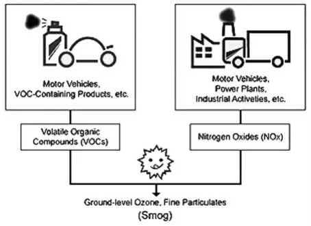

Pollution is defined as ‘an addition or excessive addition of certain materials to the physical environment (water, air and lands), making it less fit or unfit for life’.
• Pollutants are the materials or factors, which cause adverse effect on the natural quality of any component of the environment.
• For example, smoke from industries and automobiles, chemicals from factories, radioactive substances from nuclear plants, sewage of houses and discarded household articles are the common pollutants.
(i) According to the form in which they persist after release into the environment.
• Primary pollutants: These persist in the form in which they are added to the environment e.g. DDT, plastic.
• Secondary Pollutants: These are formed by interaction among the primary pollutants.
• For example, peroxyacetyl nitrate (PAN) is formed by the interaction of nitrogen oxides and hydrocarbons.
(ii) According to their existence in nature.
• Quantitative Pollutants: These occur in nature and become pollutant when their concentration reaches beyond a threshold level. E.g. carbon dioxide, nitrogen oxide.
• Qualitative Pollutants: These do not occur in nature and are man-made. E.g. fungicides, herbicides, DDT etc.
(iii) According to their nature of disposal.
• Biodegradable Pollutants: Waste products, which are degraded by microbial action. E.g. sewage.
• Non-biodegradable Pollutants: Pollutants, which are not decomposed by microbial action. E.g. plastics, glass, DDT, salts of heavy metals, radioactive substances etc.,)
(iv) According to origin
• Natural
• Anthropogenic
• Uncontrolled growth in human population
• Rapid industrialization
• Urbanization
• Uncontrolled exploitation of nature.
• Forest fires, radioactivity, volcanic eruptions, strong winds etc.,
• Air pollution is aggravated because of four developments: increasing traffic, growing cities, rapid economic development, and industrialization.
• ‘The presence in the atmosphere of one or more contaminants in such quality and for such duration as it is injurious, or tends to be injurious, to human health or welfare, animal or plant life.’
• It is the contamination of air by the discharge of harmful substances.
• Air pollution can cause health problems, damage the environment, property and climate change.
• It is a colourless, odourless gas that is produced by the incomplete burning of carbon-based fuels including petrol, diesel, and wood.
• It is also produced from the combustion of natural and synthetic products such as cigarettes.
• It lowers the amount of oxygen that enters our blood.
• It can slow our reflexes and make us confused and sleepy.
• It is the principle greenhouse gas emitted as a result of human activities such as the burning of coal, oil, and natural gases.
• These are gases that are released mainly from air-conditioning systems and refrigeration.
• When released into the air, CFCs rise to the stratosphere, where they come in contact with few other gases, which lead to a reduction of the ozone layer that protects the earth from the harmful ultraviolet rays of the sun.
• It is present in petrol, diesel, lead batteries, paints, hair dye products, etc. Lead affects children in particular.
• It can cause nervous system damage and digestive problems and, in some cases, cause cancer.
• It occurs naturally in the upper layers of the atmosphere.
• This important gas shields the earth from the harmful ultraviolet rays of the sun.
• However, at the ground level, it is a pollutant with highly toxic effects.
• Vehicles and industries are the major source of groundlevel ozone emissions.
• Ozone makes our eyes itch, burn, and water. It lowers our resistance to cold and pneumonia.
• Nitrogen oxide (Nox)
• It causes smog and acid rain. It is produced from burning fuels including petrol, diesel, and coal.
• Nitrogen oxide can make children susceptible to respiratory diseases in winters.
Suspended particulate matter (SPM)
• It consists of solids in the air in the form of smoke, dust, and vapour that can remain suspended for extended periods and is also the main source of haze which reduces visibility.
• The finer of these particles, when breathed in can lodge in our lungs and cause lung damage and respiratory problems.
• It is a gas produced from burning coal, mainly in thermal power plants.
• Some industrial processes, such as production of paper and smelting of metals, produce sulphur dioxide.
• It is a major contributor to smog and acid rain. Sulfur dioxide can lead to lung diseases.
• The term smog was first used (1905) by Dr H A Des Voeux
• Smog has been coined from a combination of the words fog and smoke. Smog is a condition of fog that had soot or smoke in it.
The Formation of Smog
• Photochemical smog (smog) is a term used to describe air pollution that is a result of the interaction of sunlight with certain chemicals in the atmosphere.
• One of the primary components of photochemical smog is ozone.
• While ozone in the stratosphere protects earth from harmful UV radiation, ozone on the ground is hazardous to human health.
• Ground-level ozone is formed when vehicle emissions containing nitrogen oxides (primarily from vehicle exhaust) and volatile organic compounds (from paints, solvents, printing inks, petroleum products, vehicles, etc.) interact in the presence of sunlight.
• Smog refers to hazy air that causes difficult breathing conditions. It is a combination of various gases with water vapour and dust.
• Its occurrences are often linked to heavy traffic, high temperatures, and calm winds. During the winter, wind speeds are low and cause the smoke and fog to stagnate near the ground; hence pollution levels can increase near ground level.
• Smoke particles trapped in the fog gives it a yellow/ black colour and this smog often settled over cities for many days.
Ground-level ozone is formed through a complex reaction involving hydrocarbons, nitrogen oxides, and sunlight. It is formed when pollutants released from gasoline, diesel-powered vehicles and oil-based solvents react with heat and sunlight.
• It hampers visibility and harms the environment.
• respiratory problems
• deaths relating to bronchial diseases.
• Heavy smog greatly decreases ultraviolet radiation.
• Heavy smog results in the decrease of natural vitamin D production leading to a rise in the cases of rickets.
• It refers to the physical, chemical, and biological characteristics of air in the indoor environment within a home, or an institution or commercial facility.
• Indoor air pollution is a concern where energy efficiency improvements sometimes make houses relatively airtight, reducing ventilation and raising pollutant levels.
• Indoor air problems can be subtle and do not always produce easily recognized impacts on health.
• Different conditions are responsible for indoor air pollution in the rural areas and the urban areas.
• It is the rural areas that face the greatest threat from indoor pollution, where people rely on traditional fuels such as firewood, charcoal, and cowdung for cooking and heating.
• Burning such fuels produces large amount of smoke and other air pollutants in the confined space of the home, resulting in high exposure. Women and children are the groups most vulnerable as they spend more time indoors and are exposed to the smoke.
• Although many hundreds of separate chemical agents have been identified in the smoke from biofuels, the four most serious pollutants are particulates, carbon monoxide, polycyclic organic matter, and formaldehyde.
• In urban areas, exposure to indoor air pollution has increased due to a variety of reasons, such as
• construction of more tightly sealed buildings,
• reduced ventilation,
• the use of synthetic materials for building and furnishing and
• the use of chemical products, pesticides, and household care products.
• Indoor air pollution can begin within the building or drawn in from outdoors.
• Other than nitrogen dioxide, carbon monoxide, and lead, there are a number of other pollutants that affect the air quality.
i) Volatile organic compounds
• The main indoor sources are perfumes, hair sprays, furniture polish, glues, air fresheners, moth repellents, wood preservatives, and other products.
• Health effect - irritation of the eye, nose and throat, headaches, nausea and loss of coordination.
• long term - suspected to damage the liver and other parts of the body.
ii) Tobacco
• Smoke generates a wide range of harmful chemicals and is carcinogenic.
• Health effect - burning eyes, nose, and throat irritation to cancer, bronchitis, severe asthma, and a decrease in lung function.
iii) Biological pollutants
• It includes pollen from plants, mite, and hair from pets, fungi, parasites, and some bacteria. Most of them are allergens and can cause asthma, hay fever, and other allergic diseases.
iv) Formaldehyde
• Mainly from carpets, particle boards, and insulation foam. It causes irritation to the eyes and nose and allergies.
v) Radon
• It is a gas that is emitted naturally by the soil. Due to modern houses having poor ventilation, it is confined inside the house and causes lung cancers.
• Trees are an important part of our world. They provide wood for building and pulp for making paper. They provide habitats (homes) for all sorts of insects, birds and other animals. Many types of fruits and nuts come from trees -- including apples, oranges, walnuts, pears and peaches. Even the sap of trees is useful as food for insects and for making maple syrup -- yum!
• Trees also help to keep our air clean and our ecosystems healthy. We breathe in oxygen and breathe out carbon dioxide. Trees breathe in carbon dioxide and breathe out oxygen. We’re perfect partners!
• Trees do lots for us, our environment and other plants and animals in nature but we don’t just love trees for practical reasons.
vi) Asbestos
vii) Pesticides
• Ash is produced whenever combustion of solid material takes place.
• Fly ash is one such residue which rises with the gases into the atmosphere. Fly ash is a very fine powder and tends to travel far in the air. The ash which does not rise is termed as bottom ash.
• Nearly 73% of India’s total installed power generation capacity is thermal, of which 90% is coal-based generation, with diesel, wind, gas, and steam making up the rest.
1. Aluminium silicate (in large amounts)
2. Silicon dioxide (SiO2) and
3. Calcium oxide (CaO).
• Fly ash particles are oxide rich and consist of silica, alumina, oxides of iron, calcium, and magnesium and toxic heavy metals like lead, arsenic, cobalt, and copper.
• Fly ash is generally captured by electrostatic precipitators or other particle filtration equipments before the flue gases reach the chimneys of coal-fired power plants.
• If fly ash is not captured and disposed off properly, it can pollute air and water considerably.
• It causes respiratory problems.
• Fly ash in the air slowly settles on leaves and crops in fields in areas near to thermal power plants and lowers the plant yield.
Advantages:
• Cement can be replaced by fly ash upto 35%, thus reducing the cost of construction, making roads, etc.
• Fly ash bricks are light in weight and offer high strength and durability.
• Fly ash is a better fill material for road embankments and in concrete roads.
• Fly ash can be used in reclamation of wastelands.
• Abandoned mines can be filled up with fly ash.
• Fly ash can increase the crop yield and it also enhances water holding capacity of the land .
Policy measures of MoEF:
• The Ministry of Environment and Forests vide its notification in 2009, has made it mandatory to use Fly Ash based products in all construction projects, road embankment works and low lying land filling works within 100 kms radius of Thermal Power Station.
• To use Fly Ash in mine filling activities within 50 kms radius of Thermal Power Stations.
5.2.5. Effects of air pollution
1. Health effect
|
Name Of Pollutant |
Sources |
Health Effects |
|
Sulphur Oxides |
Thermal power plants and industries |
Eye and throat irritation, cough, allergies, impairs enzyme function in respiratory system. Reduces exchange of gases from lung surface. |
|
Nitrogen Oxides |
Thermal power plant, industries and vehicles |
Irritation and inflammation of lungs, breathlessness, impairs enzyme function in respiratory system and causes bronchitis and asthma. |
|
Suspended Particulate Matter (SOM) |
Vehicular emissions and burning of fossil fuels |
Lung irritation reduces development of RBC and cause pulmonary malfunctioning. |
|
Carbon Monoxide |
Vehicular emissions and burning of fossil fuels |
Difficulty in breathing, severe headaches, irritation to mucous membrane, unconsciousness and death |
|
Carbon Dioxide |
Burning of fossil fuels |
Impairs reflexes, judgment and vision, severe headaches and heart strain. |
|
Smog |
Industries and vehicular pollution |
Respiratory problems and intense irritation to the eyes. |
|
Ozone |
Automobile emissions |
Breathlessness, asthma, wheezing, chest pain, emphysema and chronic bronchitis. |
|
Chlorofluorocarbons |
Refrigerators, sprays, emissions from jets |
Depletion of stratospheric ozone layer, global warming. |
|
Hydrocarbons |
Burning of fossil fuels |
Carcinogenic effect on lungs, kidney damage, hypertension, respiratory distress, irritation of eyes, nose and throat, asthma, bronchitis and impairs enzyme function in respiratory system. |
|
Tobacco Smoke |
Cigarettes, cigars etc. |
Chronic bronchitis, asthma and lung cancer, irritation of eyes, nose and throat. |
|
Mercury |
Industries |
Nervous disorders, insomnia, memory loss, excitability, irritation, tremor, gingivitis and minamata disease. |
|
Lead |
Leaded petrol emissions |
Damage to brain and central nervous system, kidneys and brains, impaired intelligence and interference with development of RBCs. |
|
Cadmium |
Industries |
Affects the heart |
|
Silica dust |
Silicon quarries |
Silicosis affects the lungs |
|
Cotton dust |
Cotton textile factories |
Byssinosis involves destruction of lung tissues, chronic cough, bronchitis and emphysema. |
|
Asbestos dust |
Asbestos mining, asbestos sheet manufacturing |
Asbestosis which involves severe respiratory problems and may lead to cancer. |
|
Radioactive pollutants |
Cosmic rays, x-rays, beta rays, radon and radium |
Destroy living tissues and blood cells; affect cell membrane and cell enzyme functions, leukemia, and permanent genetic changes. |
|
Coal dust and particles |
Coal mines |
Black lung cancer, pulmonary fibrosis which lead to respiratory failure. |
II. Effects on Vegetation
• retard photosynthesis.
• Sulphur dioxide causes chlorosis, plasmolysis, membrane damage and metabolic inhibition.
• Hydrocarbons such as ethylene cause premature leaf fall, fruit drop, shedding of floral buds, curling of petals and discoloration of sepals.
• Ozone damage chlorenchyma and thus destructs the foliage in large number of plants.
III. Effects on Animals
IV. Detoriation of materials
V. Aesthetic Loss
1. Policy measures
2. Preventive measures:
• Selection of suitable fuel (e.g.fuel with low sulphur content) and its efficient utilization
• Modifications in industrial processes and/or equipments to reduce emission.
• Selection of suitable manufacturing site and zoning. e.g. setting of industries at a distance of residential areas, installation of tall chimneys.
(i) destroying the pollutants by thermal or catalytic combustion
(ii) conversion of the pollutants to a less toxic form
(iii) collection of the pollutant
• Different types of air pollutants can be eliminated / minimised by following methods:
a) Control of particulate matter: Two types of devices -arresters and scrubbers are used to remove particulate pollutants from air. These are arresters and scrubbers.
i. Arresters: These are used to separate particulate matters from contaminated air.
ii. Scrubbers: These are used to clean air for both dusts and gases by passing it through a dry or wet packing material.
b) Control of Gaseous Pollutants:
The gaseous pollutants can be controlled through the techniques of Combustion, absorption and adsorption.
c) Control of Automobile Exhaust
i. use of efficient engines (e.g. multipoint fuel injection engine).
ii. Catalytic converter filters in the vehicles can convert nitrogen oxide to nitrogen and reduce the potential hazards of NOx.
iii. use of good quality automobile fuels
iv. use of lead free petrol.
v. Use of compressed natural gas (CNG).
(1) National Air Quality Monitoring Programme
• In India, the Central Pollution Control Board (CPCB) has been executing a nationwide programme of ambient air quality monitoring known as National Air Quality Monitoring Programme (NAMP).
• The National Air Quality Monitoring Programme (NAMP) is undertaken in India
(i) to determine status and trends of ambient air quality;
(ii) to ascertain the compliance of NAAQS;
(iii) to identify non-attainment cities;
(iv) to understand the natural process of cleaning in the atmosphere; and
(v) to undertake preventive and corrective measures.
• Annual average concentration of SOx levels are within the prescribed National Ambient Air Quality Standards (NAAQS).
• This reduction from earlier levels is due to various measures taken, including the use of CNG in public transport in Delhi, the reduction of sulphur in diesel and use of LPG instead of coal as a domestic fuel.
• A mixed trend is observed in NO2 levels due to various measures taken for vehicular pollution control, such as stricter vehicular emission norms being partially offset by increased NOx levels due to the use of CNG in urban transport.
• Total suspended particulates, however, are still a matter of concern in several urban and semi urban areas.
(b) National Ambient Air Quality Standards (NAAQS)
• National Ambient Air Quality Standards (NAAQS) were notified in the year 1982, duly revised in 1994 based on health criteria and land uses.
• The NAAQS have been revisited and revised in November 2009 for 12 pollutants, which include
1. sulphur dioxide (SO2),
2. nitrogen dioxide (NO2),
3. particulate matter having size less than 10 micron (PM10),
4. particulate matter having size less than 2.5 micron (PM2.5),
5. ozone,
6. lead,
7. carbon monoxide (CO),
8. arsenic,
9. nickel,
10. benzene,
11. ammonia, and
12. benzopyrene.
(c) National Air Quality Index
• National Air Quality Index was launched by the Prime Minister in April, 2015 starting with 14 cities to disseminate air quality information. The AQI has six categories of air quality, viz Good, Satisfactory, Moderately Polluted, Poor, Very Poor and Severe with distinct colour scheme. Each of these categories is associated with likely health impacts. AQI considers eight pollutants (PM10, PM 2.5, NO2, SO2, CO, O3, NH3 and Pb) for which (up to 24-hourly averaging period) National Ambient Air Quality Standards are prescribed.
• India’s air pollution, ranked among the worst in the world is adversely impacting the lifespan of its citizens, reducing most Indian lives by over three years - WHO.
• Over half of India’s population - 660 million people -live in areas where fine particulate matter pollution is above India’s standards for what is considered safe -‘Economic & Political Weekly’
• Of the world’s top 20 polluted cities, 13 are in India. Air pollution slashes life expectancy by 3.2 years for the 660 million Indians who live in cities.
• 2014 global analysis of how nations tackle environmental challenges has ranked India 155 among 177 nations and labelled the country’s air quality among the worst in the world.
• India is placed as the “bottom performer” on several indicators such as environmental health impact, air quality, water and sanitation and india’s environment health severly lags behind the BRICS nations - Environmental Performance Index 2014.
• The Ganga and Yamuna are ranked among the world’s 10 most polluted rivers.
• Despite the directives of the National Green Tribunal, civic agencies continue to allow concretisation in green belts. Booming real estate and demand for housing units is leading to change of land use and shrinkage of natural conservation zones such as forests, water bodies, wastelands, sanctuaries, groundwater rechargeable areas.
• Mindless concretisation of ground and green belts and booming real estate has led to heat island effect - shortwave radiations emanate from concrete surfaces at night time. Concretisation prevents ground water recharge thus depleting green cover. Tall buildings also block winds thereby reducing their cooling effect. Excessive concretisation also leads to weakening of trees.
• The environmental crisis in India is many-sided and multi-faceted which has to be addressed on different fronts and by a variety of different actors. We need to harness scientific and social-scientific expertise to develop and promote eco-friendly technologies in construction, energy, water management, industrial production and transportation. Scientific innovation needs to be complemented by legislative change as well as by changes in social behaviour.
• The city needs an implementation strategy to
• Reduce traffic and vehicles,
• Cut dieselization,
• Scale up integrated public transport,
• Facilitate walking and cycling,
• Tax polluting modes,
• Decide to implement Bharat Stage IV nationwide in 2015 and
• Euro VI in 2020 and
• Put controls on other pollution sources.
Do you know?
Zoological Survey of India (ZSI) was established on 1st July 1916 to promote the survey, exploration, research and documentation leading to the advancement in our knowledge on various aspects of animal taxonomy of the Indian subcontinent.ZSI is a premier institution on animal taxonomy in India under the Ministry of Environment, Forest and Climate Change. ZSI has been declared as the designated repository for the National Zoological Collection as per Section 39 of the National Biodiversity Act, 2002.
• ‘Addition of certain substances to the water such as organic, inorganic, biological, radiological, heat, which degrades the quality of water so that it becomes unfit for use’. Water pollution is not only confined to surface water, but it has also spread to ground water, sea and ocean.
5.3.1. Sources
Types of sources
1. Point Sources
• It is directly attributable to one influence. Here pollutant travels directly from source to water. Point sources are easy to regulate.
• It is from various ill defined and diffuse sources. They vary spatially and temporally and are difficult to regulate.
• The main sources of water pollution are as follows:
1) Community waste water: Include discharges from houses, commercial and industrial establishments connected to public sewerage system. The sewage contains human and animal excreta, food residues, cleaning agents, detergents and other wastes.
Putrescibility is the process of decomposition of organic matter present in water by microorganisms using oxygen.
2) Industrial Wastes: The industries discharge several inorganic and organic pollutants, which may prove highly toxic to the living beings.
• Fertilizers contain major plant nutrients such as nitrogen, phosphorus and potassium.
• Excess fertilizers may reach the ground water by leaching or may be mixed with surface water of rivers, lakes and ponds by runoff and drainage.
• Pesticides include insecticides, fungicides, herbicides, nematicides, rodenticides and soil fumigants.
• They contain a wide range of chemicals such as chlorinated hydrocarbons, organophosphates, metallic salts, carbonates, thiocarbonates, derivatives of acetic acid etc. Many of the pesticides are non-degradable and their residues have long life.
• The animal excreta such as dung, wastes from poultry farms, piggeries and slaughter houses etc. reach the water though run off and surface leaching during rainy season.
|
Type of Industry |
Inorganic pollutants |
Organic pollutant |
|
Mining |
Mine Wastes: Chlorides, various metals, ferrous sulphate, sulphuric acid, hydrogen sulphide, ferric hydroxide, surface wash offs, suspended solids, chlorides and heavy metals. | |
|
Iron and Steel |
Suspended solids, iron cyanide, thiocyanate, sulphides, oxides of copper, chromium, cadmium, and mercury. |
Oil, phenol and neptha |
|
Chemical Plants |
Various acids and alkalies, chlorides, sulphates, nitrates of metals, phosphorus, fluorine, silica and suspended particles. |
Aromatic compounds solvents, organic acids, nitro compound dyes, etc. |
|
Pharmaceutical |
- |
Proteins, carbohydrates, organic solvent intermediate products, drugs and antibiotics |
|
Soap and Detergent |
Tertiary ammonium compounds alkalies |
Flats and fatty acids, glycerol, polyphosphates, sulphonated hydrocarbons. |
|
Food processing |
- |
Highly putrescible organic matter and pathogens |
|
Paper and Pulp |
Sulphides, bleaching liquors. |
Cellulose fibres, bark, woods sugars organic acids. |
• The main sources are the thermal and nuclear power plants. The power plants use water as coolant and release hot waters to the original source. Sudden rise in temperature kills fishes and other aquatic animals.
• In India at many places, the ground water is threatened with contamination due to seepage from industrial and municipal wastes and effluents, sewage channels and agricultural runoff.
• Oceans are the ultimate sink of all natural and manmade pollutants. Rivers discharge their pollutants into the sea. The sewerage and garbage of coastal cities are also dumped into the sea. The other sources of oceanic pollution are navigational discharge of oil, grease, detergents, sewage, garbage and radioactive wastes, off shore oil mining, oil spills.
Oil Spills
• Oil spills is one of the most dangerous of all water pollutants.
• Oil spills from tankers at sea or leaks from underground storage tanks on land are very difficult to control as oil tends to spread very fast, affecting a large area in a very short time.
• On land crude is transported through pipelines or tankers which can get damaged and spew out crude oil over the land, thereby contaminating it.
• Since crude oil is lighter than water, it floats on the surface and poses the threat of swift-spreading fire.
• Oil spills at sea decrease the oxygen level in the water and cause harm to the organisms.
• Oil spills are also a source of air and groundwater pollution.
i ) Polluted water reduces Dissolved Oxygen (DO) content, thereby, eliminates sensitive organisms like plankton, molluscs and fish etc.
However a few tolerant species like Tubifex (annelid worm) and some insect larvae may survive in highly polluted water with low DO content. Such species are recognised as indicator species for polluted water.
i i) Biocides, polychlorinated biphenyls (PCBs) and heavy metals directly eliminate sensitive aquatic organisms.
i ii) Hot waters discharged from industries, when added to water bodies, lowers its DO content.
• Presence of organic and inorganic wastes in water decreases the dissolved Oxygen (DO) content of the water. Water having DO content below 8.0 mg L-1 may be considered as contaminated. Water having DO content below. 4.0 mg L-1 is considered to be highly polluted. DO content of water is important for the survival of aquatic organisms. A number of factors like surface turbulence, photosynthetic activity, O2 consumption by organisms and decomposition of organic matter are the factors which determine the amount of DO present in water.
• The higher amounts of waste increases the rates of decomposition and O2 consumption, thereby decreases the DO content of water. The demand for O2 is directly related to increasing input of organic wastes and is empressed as biological oxygen demand (BOD) of water.
• Water pollution by organic wastes is measured in terms of Biochemical Oxygen Demand (BOD). BOD is the amount of dissolved oxygen needed by bacteria in decomposing the organic wastes present in water. It is expressed in milligrams of oxygen per litre of water.
• The higher value of BOD indicates low DO content of water. Since BOD is limited to biodegradable materials only. Therefore, it is not a reliable method of measuring pollution load in water.
• Chemical oxygen demand (COD) is a slightly better mode used to measure pollution load in water. It is the measure of oxygen equivalent of the requirement of oxidation of total organic matter (i.e. biodegradable and non-biodegradable) present in water.
The polluted water usually contains pathogens like virus, bacteria, parasitic protozoa and worms, therefore, it is a source of water borne diseases like jaundice, cholera, typhoid, amoebiasis etc.
The Environmental Performance Index, is conducted and written by environmental research centers at Yale and Columbia universities with assistance from outside scientists.
Different parts of the tree grow at different times of the year. A typical pattern is for most of the foliage growth to occur in the spring, followed by trunk growth in the summer and root growth in the fall and winter. Not all the trees follow the same pattern.
• Mercury compounds in waste water are converted by bacterial action into extremely toxic methyl mercury, which can cause numbness of limbs, lips and tongue, deafness, blurring of vision and mental derangement.
A cripling deformity called Minamata disease due to consumption of fish captured from mercury contaminated Minamata Bay in Japan was detected in 1952.
• Water contaminated with cadmium can cause itai itai disease also called ouch-ouch disease (a painful disease of bones and joints) and cancer of lungs and liver.
• The compounds of lead cause anaemia, headache, loss of muscle power and bluish line around the gum.
i. Presence of excess nitrate in drinking water is dangerous for human health and may be fatal for infants.
Excess nitrate in drinking water reacts with hemoglobin to form non-functional methaemoglobin, and impairs oxygen transport. This condition is called methaemoglobinemia or blue baby syndrome.
ii. Excess fluoride in drinking water causes neuro-mus-cular disorders, gastro-intestinal problems, teeth deformity, hardening of bones and stiff and painful joints (skeletal fluorosis).
• High concentration of fluoride ions is present in drinking water in 13 states of India. The maximum level of fluoride, which the human body can tolerate is 1.5 parts per million (mg/1 of water). Long term ingestion of fluoride ions causes fluorosis.
iii. Over exploitation of ground water may lead to leaching of arsenic from soil and rock sources and contaminate ground water. Chronic exposure to arsenic causes black foot disease. It also causes diarrhoea, peripheral neuritis, hyperkerotosis and also lung and skin cancer.
Arsenic contamination is a serious problem (in tube well dug areas) in the Ganges Delta, west bengal causing serious arsenic poisoning to large numbers of people. A 2007 study found that over 137 million people in more than 70 countries are probably affected by arsenic poisoning of drinking water.
4. Biological Magnification
5. Eutrophicaiton
1) Riparian buffers
2) Treatment of sewage water and the industrial effluents should be done before releasing it into water bodies.
3) Hot water should be cooled before release from the power plants
4) Domestic cleaning in tanks, streams and rivers, which supply drinking water, should be prohibited.
5) Excessive use of fertilizers and pesticides should be avoided.
6) Organic farming and efficient use of animal residues as fertilizers.
7) Water hyacinth (an aquatic weed) can purify water by taking some toxic materials and a number of heavy metals from water.
8) Oil spills in water can be cleaned with the help of bregoli - a by-product of paper industry resembling saw dust, oil zapper, micro-organisms.
The steps taken by the Government to address the issues of water pollution include the following:-
i. Preparation of action plan for sewage management and restoration of water quality in aquatic resources by State Governments;
ii. Installation of Online Effluent Monitoring System to check the discharge of effluent directly into the rivers and water bodies;
iii. Setting up of monitoring network for assessment of water quality;
iv. Action to comply with effluent standards is taken by SPCBs / PCCs to improve the water quality of the rivers;
v. Financial assistance for installation of Common Effluent Treatment Plants for cluster of Small Scale Industrial units;
vi. Issuance of directions for implementation of Zero Liquid Discharge;
vii. Issuance of directions under Section 5 of Environment (Protection) Act, 1986 to industries and under Section 18(1)(b) of Water (Prevention and Control of Pollution) Act, 1974;
viii. Implementation of National Lake Conservation Plan (NLCP) and National Wetland Conservation Programme (NWCP) for conservation and management of identified lakes and wetlands in the country which have been merged in February, 2013 into an integrated scheme of National Plan for Conservation of Aquatic Eco-systems (NPCA) to undertake various conservation activities including interception, diversion and treatment of waste water, pollution abatement, lake beautification, biodiversity conservation, education and awareness creation, community participation etc.
• Soil is a thin layer of organic and inorganic materials that covers the Earth’s rocky surface. Soil pollution is defined as the ‘addition of substances to the soil, which adversely affect physical, chemical and biological properties of soil and reduces its productivity.’
• It is build-up of persistent toxic compounds, chemicals, salts, radioactive materials, or disease causing agents in soil which have adverse effects on plant growth, human and animal health.
• A soil pollutant is any factor which deteriorates the quality, texture and mineral content of the soil or which disturbs the biological balance of the organisms in the soil.
• Indiscriminate use of fertilizers, pesticides, insecticides and herbicides
• Dumping of large quantities of solid waste
• Deforestation and soil erosion.
• Pollution Due to Urbanisation
5.4.2. Source
i. Industrial Wastes:
• Industrial waste includes chemicals such as mercury, lead, copper, zinc, cadmium, cynides, thiocynates, chromates, acids, alkalies, organic substances etc.
ii. Pesticides:
• Pesticides are chemicals that include insecticides, fungicides, algicides, rodenticides, weedicides sprayed in order to improve productivity of agriculture, forestry and horticulture.
iii. Fertilizers and manures:
• Chemical fertilizers are added to the soil for increasing crop yield. Excessive use of chemical fertilizers reduces the population of soil borne organism and the crumb structure of the soil, productivity of the soil and increases salt content of the soil.
iv. Discarded materials:
• It includes concrete, asphalt, rungs, leather, cans, plastics, glass, discarded food, paper and carcasses.
v. Radioactive wastes:
• Radioactive elements from mining and nuclear power plants, find their way into water and then into the soil.
vi. Other pollutants:
• Many air pollutants (acid rain) and water pollutants ultimately become part of the soil and the soil also receives some toxic chemicals during weathering of certain rocks. [in box]
I. Agricultural Soil Pollution
II. Pollution due to industrial effluents and solid wastes
III. Pollution due to urban activities
i) Agriculture
• Reduced soil fertility
• Reduced nitrogen fixation
• Increased erosion
• Loss of soil and nutrients
• Reduced crop yield
• Increased salinity
• Deposition of silt in tanks and reservoirs
ii) Health
• Dangerous chemicals entering underground water
• Bio magnification
• Release of pollutant gases
• Release of radioactive rays causing health problems iii) Environment
• Reduced vegetation
• Ecological imbalance
• Imbalance in soil fauna and flora
iv) Urban areas
• Clogging of drains
• Inundation of areas
• Foul smell and release of gases
• Waste management problems
• Control measures
• Reducing chemical fertilizer and pesticide use
• Use of bio pesticides, bio fertilizers.
• Organic farming
• Four R’s: Refuse, Reduce, Reuse, and Recycle
• Afforestation and Reforestation
• Solid waste treatment
• Reduction of waste from construction areas
Do you know?
Amur Falcons, which come to roost every year at Doy-anglake during their flight from Mongolia to South Africa. Amur falcons are the longest travelling raptors in the world. World has recognized Pangti village in Nagaland as the world’s Amur Falcon capital, as more than one million birds can be seen in just 30 minutes. Until recently, Naga tribesmen used to hunt thousands of Amur falcons for meat. But last year, after a vigorous campaign by wildlife activists, they pledged to protect the bird and since then, not a single bird has been hunted in the area.
Four R’s
1. Refuse
• Instead of buying new containers from the market, use the ones that are in the house. Refuse to buy new items though you may think they are prettier than the ones you already have.
2. Reuse
• Do not throw away the soft drink cans or the bottles; cover them with homemade paper or paint on them and use them as pencil stands or small vases.
3. Recycle
• Use shopping bags made of cloth or jute, which can be used over and over again. Segregate your waste to make sure that it is collected and taken for recycling.
4. Reduce
• Reduce the generation of unnecessary waste, e.g. carry your own shopping bag when you go to the market and put all your purchases directly into it.